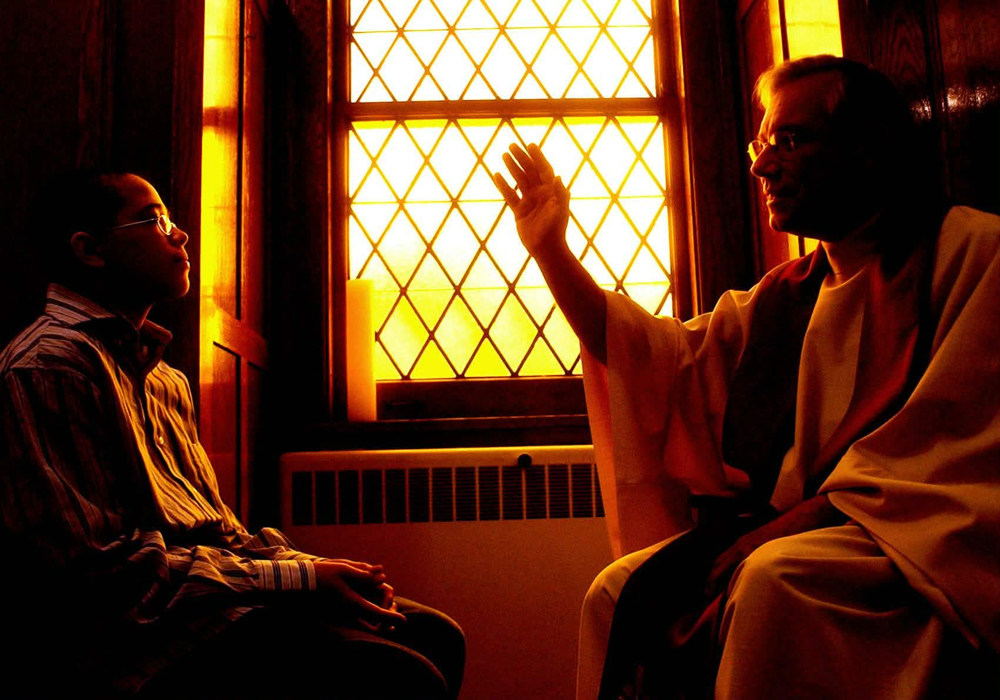

SACRAMENT OF HEALING
God's Mercy
and Forgiveness
The Sacrament of Penance—also called Reconciliation or Confession—is a ritual where a person confesses their sins to a priest, shows true sorrow, and receives God's forgiveness and absolution. It heals the soul, restores broken bonds with God and the church, and grants peace.
It is vital because it heals our relationship with God and the Church, forgives sins committed after baptism, and gives us the spiritual strength to resist temptation and make better choices.

God's mercy gives us the grace to begin again.
UNDERSTANDING RECONCILIATION
What happens in Reconciliation?
Resets
It connects to Christian life by providing ongoing spiritual healing, restoring grace lost by sin, and reorienting the believer toward God. It acts as a regular reset for the soul, turning daily struggles into opportunities for deeper conversion, humility, and restored community with the Church.
Forgiveness
Through the priest's ministry and the words of absolution, we receive God's forgiveness and mercy. We are reconciled with God and restored to communion with the Church.
Wipes away sins
The Sacrament of Penance restores the sinner to God’s grace, re-establishing intimate friendship and true communion with the Church. It wipes away mortal and venial sins, removes eternal punishment, and grants spiritual strength to resist future temptation.
Signs and Symbols of Reconciliation.݁
Reconciliation uses several important signs that help us understand its meaning.
Purple Stole — A cloth worn by the priest, representing repentance and turning away from sin.
Sign of the Cross — Represents God's forgiveness and peace.
Crossed Keys — Represents the spiritual authority to forgive, retain, or "bind and loose" sins on earth.
WHY IT MATTERS
Reconciliation and the Christian Life
It encourages us to forgive others, take responsibility for our actions, and choose to live with greater love, compassion, and kindness toward the people around us.
LEARN MORE
The Sacrament of Reconciliation
Learn more about the Sacrament of Reconciliation.